Laboratório 2 Efeitos de Pólos e Zeros na Dinâmica
2.1 Apresentação do Laboratório
2.1.1 Objetivo
Nesta experiência, verificaremos a influência dos pólos e zeros de uma Função de Transferência na resposta dinâmica para entradas do tipo degrau e também para entradas senoidais. Utilizaremos o Matlab para realizar as simulações.
2.1.2 Polos e Zeros
Considere uma função de Trasnferência da forma
\[ G(s) = \frac{Y(s)}{U(s)} = \frac{N(s)}{D(s)} = \frac{b_1s^m +b_2s^{m-1} + \dots + b_ms + b_{m+1}}{s^n + a_1s^{n-1}+ \dots + a_{n-1}s + a_n} \]
onde \(Y(s)\) é a saída, \(U(s)\) é a entrada, \(n \geq m\) e todos os coeficientes são reais. Temos as seguintes definições:
- Os pólos \(G(s)\) são as raízes de \(D(s)\) (\(D(s) = 0\));
- Os zeros de \(G(s)\) são as raízes de \(N(s)\) (\(N(s) = 0\));
- \(G(s)\) é estável quando todos os pólos possuem parte real negativa, ou seja, estão no semi-plano esquerdo (SPE) do plano \(s\);
- \(G(s)\) é instável quando existe ao menos um pólo com parte real positiva, ou seja, no semi-plano (SPD);
- \(G(s)\) é de fase não-mínima quando há polos ou zeros no SPF.
Considere que \(G(s)\) é estável, ou seja, todos os pólos estão no SPE. Em geral, para entradas do tipo degrau, temos:
- A componente da resposta dinâmica referente a um pólo afastado da origem (do plano \(s\)) é relativamente rápida;
- A componente da resposta dinâmica referente a um pólo próximo da origem é relativamente lenta;
- Um zero tende a fazer com que a resposta dinâmica apresente sobressinal. Quanto mais próximo da origem estiver o zero, maior o sobressinal. E, quanto mais longe da origem, menor se torna o sobressinal, podendo o mesmo não existir. Assim, um sistema de segunda ordem com pólos reais e um zero poderá apresentar um sobressinal dependendo do posicionamento do zero no plano \(s\);
- Um zero bem próximo de um pólo tende a anular os efeitos dos mesmos na resposta dinâmica.
2.2 Procedimentos
Problema 1
Considere o sistema de primeira ordem
\[
G(s) = \frac{1}{\tau s +1},
\]
onde \(\tau = 1\), \(\tau = 0.5\). Para cada valor de \(\tau\), determine o pólo e sua posição no plano \(s\) (use os comandos zpk e pzmap no Matlab), e conclua sobre a estabilidade e a rapidez da resposta do sistema. Simule para uma entrada do tipo degrau unitário. Analise e compare os resultados. Agora, repita o procedimento para o sistema
\[
G(s) = \frac{1}{s-1}.
\]
Resolução
A resolução será feita em quatro partes: (1) a resolução para \(\tau = 1\) usando pzmap, (2) a resolução para \(\tau = 0.5\) usando pzmap, (3) a simulação e comparação dos resultados e, por fim, (4) a resolução para \(G(s) =\frac {1}{s-1}\).
Parte 1
Para \(\tau = 1\), temos a função de transferência dada por \[ G(S)= \frac {1}{s+1}. \]
O código implementado no Matlab foi o apresentado abaixo.
Tendo como resultados de polos e zeros:
p =
-1
z =
0×1 empty double column vectorOu seja, a função de transferência não apresenta zeros e tem seu polo em \(s = -1\). A sua posição no plano é apresentada na figura abaixo.
Como o polo da função de transferência se encontra na SPE, conclui-se que o sistema se compartará de uma forma estável.
Parte 2
Para \(\tau = 0.5\), temos a função de transferência dada por \[ G(S)= \frac {1}{0.5s+1}. \]
O código implementado no Matlab foi o apresentado abaixo.
Tendo como resultados de polos e zeros:
p =
-2
z =
0×1 empty double column vectorOu seja, a função de transferência não apresenta zeros e tem seu polo em \(s = -2\). A sua posição no plano é apresentada na figura abaixo
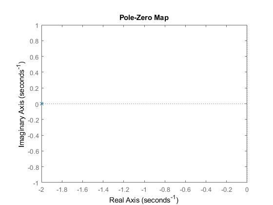
Como o polo da função de transferência se encontra na SPE, conclui-se que o sistema se compartará de uma forma estável. Também é possível concluir que o sistema alcanraça a estabilidade mais rápido para \(\tau = 0.5\).
Parte 3
A simulação do sistema implementada em Matlab está apresentado na figura abaixo.
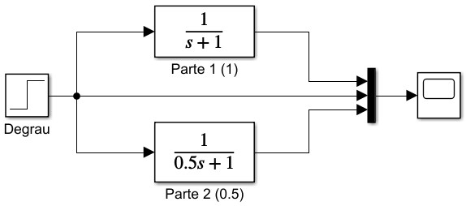
O resultado apresentado pelo scope é apresentado na figura abaixo.
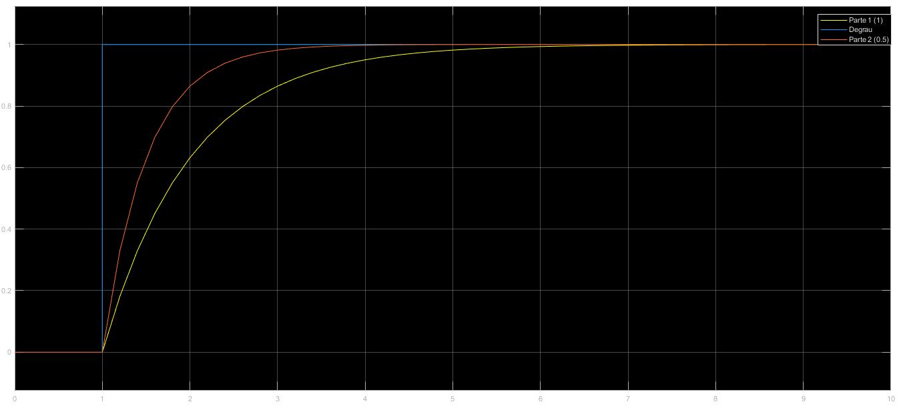
Percebe-se que, assim como esperado, o sistema se comporta de forma estável e tem uma convergência mais rápida para \(\tau = 0.5\).
Parte 4
Para a última etapa temos a função de transferência dada por \[ G(S)= \frac {1}{s-1}. \]
O código implementado no Matlab foi o apresentado abaixo.
Tendo como resultados de polos e zeros:
p =
1
z =
0×1 empty double column vectorOu seja, a função de transferência não apresenta zeros e tem seu polo em \(s = 1\). A sua posição no plano é apresentada na figura abaixo
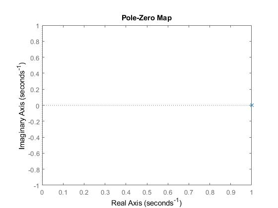
Como o polo da função de transferência se encontra na SPD, conclui-se que o sistema se compartará de uma forma instável. A simulação em Matlab está apresentada na figura abaixo.
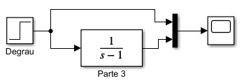
O resultado apresentado pelo scope é apresentado na figura abaixo.
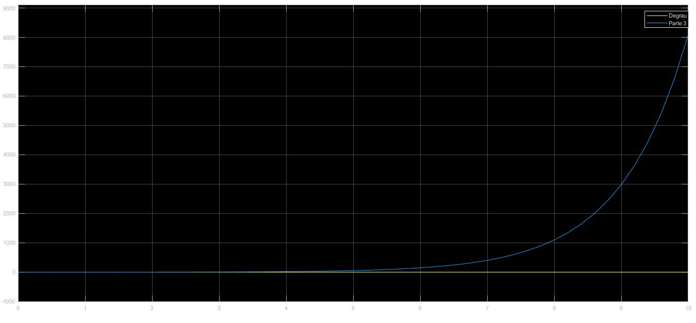
O resultado comprova o esperado. O sistema se comporta de forma instável para a função de transferência dada por \(G(s) = \frac {1}{s-1}\).
Problema 2
Considere o sistema de primeira ordem (integrador) \[ G(s) = \frac {1}{s}. \]
Determine o pólo e a sua posição no plano \(s\) e simule para uma entrada do tipo degrau unitário e também para \(\sin {(t)}\) (para \(\sin {(t)}\), escolha Max Step Size = 0.1 em Simulation \(\implies\) Configurarion Parameters). Note que a saída é a integral da entrada. Tais resultados eram esperados? Dica: relembre que \(Y(s) = G(s)U(s)\), e que se \(x(t) \iff X(S)\), então \(\int_0^t x(\tau) \mathrm{d}\tau \iff X(s)/s\).
Resolução
O código utilizado no Matlab é apresentado abaixo.
Obtendo como resultado:
p =
0
z =
0×1 empty double column vectorConclue-se então que a função de transferência \(G(s) = \frac {1}{s}\) não tem zeros e tem pólo em \(s = 0\). O mapa da posição no plano é mostrado na figura abaixo.
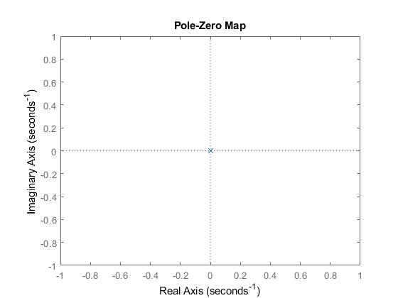
Isso mostra que o sistema é um caso crítico. Neste caso a resposta em regime permanente do sistema a uma entrada de amplitude limitada será uma senóide.
A simulação feita em Matlab está apresentada na figura abaixo.
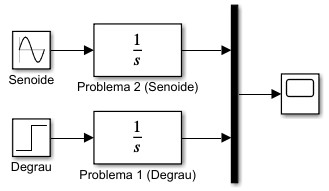
O resultado da simulação é apresentado na figura abaixo.
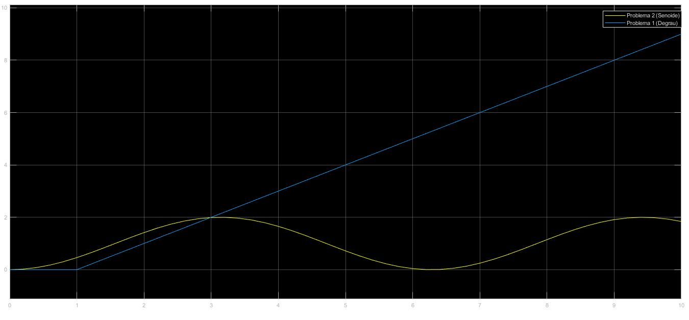
O resultados eram esperados, uma vez que em um estado crítico a função de transferência pode estar em um estado permanente senoidal caso a entrada seja senoidal ou pode divergir caso a entrada seja um sinal constante.
Problema 3
Considere o sistema de segunda ordem \[ G(s) = \frac {1}{s^2 +25}. \]
Determine os pólos e suas posições no plano \(s\). Simule para as seguintes entradas: degrau unitário, \(\sin (4t)\), \(\sin(6t)\). Observe que a saída é limitada. Agora, semule para a entrada \(\sin(5t)\). Note que a amplitude de saída cresce indefinidamente. Tal fenômeno é denominado de ressonância. De moro mais geral, para \[ G(s) = \frac {1}{s^2+\omega_0^2}, \] teremos ressonância quando aplicamos uma entrada senoidal da forma \(\sin(\omega_0t + \phi)\). Note que a frequência de ressonância \(\omega_0\) é igual a parte imaginária dos pólos de \(G(s)\).
Resolução
O código utilizado no Matlab é apresentado abaixo.
Obtendo como resultado:
p =
0.0000 + 5.0000i
0.0000 - 5.0000i
z =
0×1 empty double column vectorConclue-se então que a função de transferência \(G(s) = \frac {1}{s^2 +25}\) não tem zeros e tem pólo em \(s = \pm 5i\). O mapa da posição no plano é mostrado na figura abaixo.
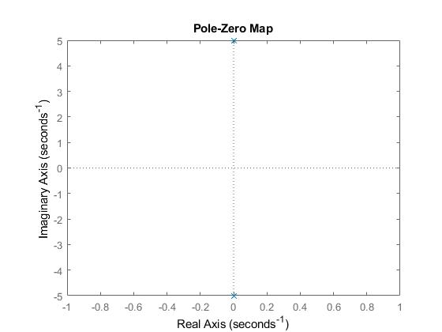
De acordo com o mapa de posição, pode-se concluir que a função de transferência é classificada como um caso crítico. A figura abaixo apresenta o modelo de simulação criado no Simulink.
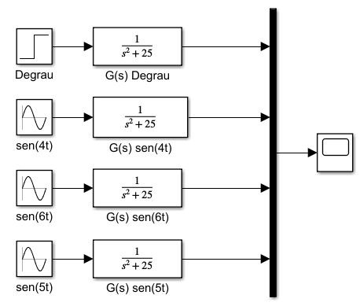
O resultado da simulação é apresentado abaixo.
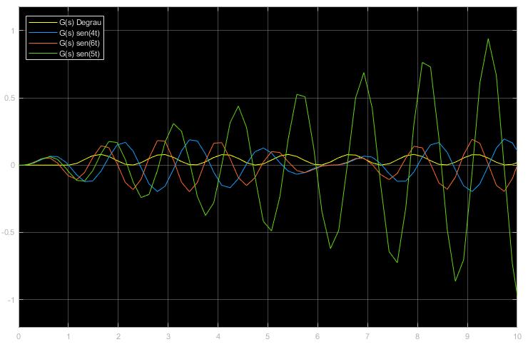
É fácil perceber que o modelo se comporta de maneira instável com a entrada \(u(t) = \sin(5t)\), se mostrando estável nas demais situações.
Problema 4
Considere o sistema de segunda orde \[ G(s) = \frac {1.6}{(s+1)(s+2)} = \frac {0.8}{0.5s^2+1.5s+1}. \]
Determine os pólos e suas posições no plano \(s\) e simule para uma entrada do tipo degrau unitário. Note que não há sobressinal. Tal resultado era esperado? Justifique.
Agora, adicionando um zero, temos \[ G(s) = \frac {1.6(\beta s+1)}{(s+1)(s+2)} = \frac {0.8(\beta s+1)}{0.5s^2 +1.5s +1}, \] onde \(\beta = 0.1\), \(\beta = 0.6\), \(\beta = 0.99\), \(\beta = 1.2\), \(\beta = 2\), \(\beta = 10\). Para cada valor de \(\beta\), determine os pólos e zeros, suas posições no plano \(s\) e simule para uma entrada do tipo degrau unitário. Analise e compare os resultados. Note que dependendo da posição do zero o sobressinal será maior ou menor, podendo também não estar presente.
Resolução
Utilizando a função pzmap() do Matlab para encontrar os pólos da função de transferência \(G(s) = \frac {0.8}{0.5s^2+1.5s+1}\) temos que a função não possui zeros e possui polos para \(s = -2\) e \(s = -1\). O mapa de posições é apresentado na figura abaixo.
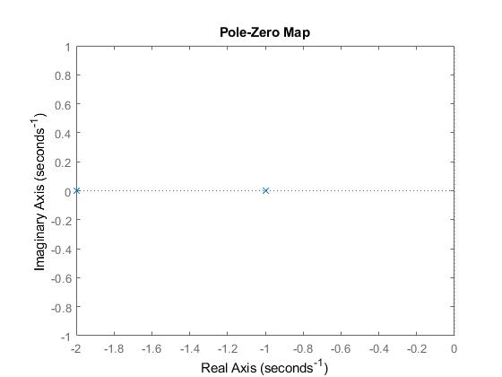
O resultado da função de transferência é apresentado na figura abaixo.